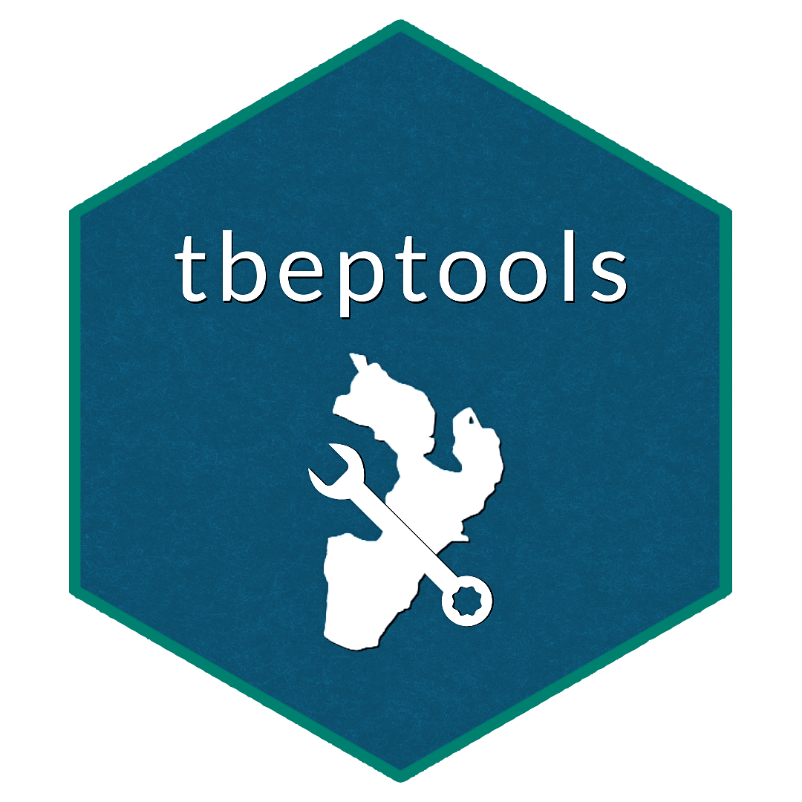

Plot frequency occurrence for a seagrass transect by time for all species
Source:R/show_transectsum.R
show_transectsum.RdPlot frequency occurrence for a seagrass transect by time for all species
Arguments
- transectocc
data frame returned by
anlz_transectocc- site
chr string indicating site results to plot
- species
chr string indicating which species to plot
- yrrng
numeric indicating year ranges to evaluate
- abund
logical indicating if abundance averages are plotted instead of frequency occurrence
- sppcol
character vector of alternative colors to use for each species, must have length of six
Value
A plotly object
Details
This plot provides a quick visual assessment of how frequency occurrence or abundance for multiple species has changed over time at a selected transect.
Examples
if (FALSE) {
transect <- read_transect()
}
transectocc <- anlz_transectocc(transect)
show_transectsum(transectocc, site = 'S3T10')